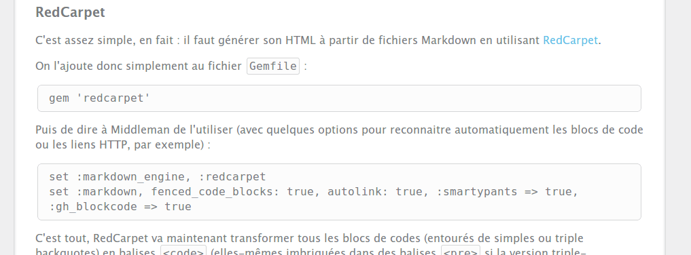
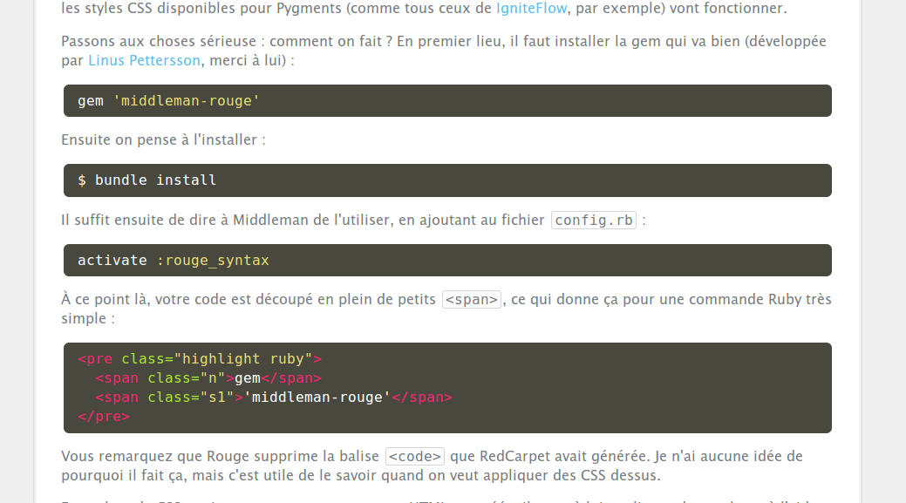

Pour pouvoir poster du code beau et lisible sur un blog Middleman, on va utiliser RedCarpet pour transformer notre Markdown en HTML puis Rouge pour découper ce HTML en tokens en fonction du langage utilisé. On saupoudrera le tout d'un peu de CSS pour obtenir une vrai belle coloration syntaxique.
RedCarpet
C'est assez simple, en fait : il faut générer son HTML à partir de fichiers Markdown en utilisant RedCarpet.
On l'ajoute donc simplement au fichier Gemfile :
gem 'redcarpet'
Puis on va dire à Middleman de l'utiliser (avec quelques options pour reconnaitre automatiquement les blocs de code ou les liens HTTP, par exemple) :
set :markdown_engine, :redcarpet
set :markdown, fenced_code_blocks: true, autolink: true, smartypants: true, gh_blockcode: true, lax_spacing: true
C'est tout, RedCarpet va maintenant transformer tous les blocs de codes (entourés de simples ou triple backquotes) en balises <code> (elles-mêmes imbriquées dans des balises <pre> si la version triple-backquotes est utilisée).
Le code Markdown que j'utilise ressemble à ça (qui parlera aux habitués du Markdown de GitHub) :
On l'ajoute donc simplement au fichier `Gemfile` :
```ruby
gem 'redcarpet'
```
Et il est compilé par RedCarpet en ce code HTML :
<p>On l'ajoute donc simplement au fichier <code>Gemfile</code> :</p>
<pre>
<code class="ruby">
gem 'redcarpet'
</code>
</pre>
Avec un peu de CSS (c'est du Sass, en fait), histoire que ça ait un peu de gueule : fond gris, bordure grise, angles arrondis et du padding plus ou moins grand selon qu'on est dans un bloc inline (simple backquote) ou pleine-ligne (triple backquote).
code
margin: 0 0.1em
padding: 0.1em 0.2em
border: 1px solid #d5d6d7
background-color: #fcfcfc
border-radius: 0.2em
pre
margin: 0 0.2em
padding: 0.5em 1em
border: 1px solid #d5d6d7
background-color: #fcfcfc
border-radius: 0.4em
code
margin: 0
padding: 0
border: none
background: none
On doit donc obtenir un truc comme ça :

Coloration syntaxique avec Rouge
Rouge est un analyseur lexical qui permet de découper le code (précédemment détecté par RedCarpet) en tout un tas de balises <span> qui peuvent ensuite être stylées (donc colorées). Rouge est compatible avec Pygments (un analyseur lexical en Python très populaire, notamment utilisé par GitHub, entre autres), ce qui signifie que les styles CSS disponibles pour Pygments (comme tous ceux de IgniteFlow, par exemple) vont fonctionner.
Passons aux choses sérieuse : comment on fait ? En premier lieu, il faut installer la gem qui va bien (développée par Linus Pettersson, merci à lui) :
gem 'middleman-rouge'
Ensuite on pense à l'installer :
$ bundle install
Il suffit ensuite de dire à Middleman de l'utiliser, en ajoutant au fichier config.rb :
activate :rouge_syntax
À ce point là, votre code est découpé en plein de petits <span>, ce qui donne, pour le même bout de Markdown que celui utilisé plus haut :
<p>On l'ajoute donc simplement au fichier <code>Gemfile</code> :</p>
<pre class="highlight ruby">
<span class="n">gem</span>
<span class="s1">'redcarpet'</span>
</pre>
Vous remarquez que Rouge supprime la balise <code> que RedCarpet avait générée. Je n'ai aucune idée de pourquoi il fait ça, mais c'est utile de le savoir quand on veut appliquer des CSS dessus.
En parlant de CSS, maintenant que notre structure HTML est créée, il reste à lui appliquer des couleurs à l'aide d'une feuille de styles. Comme je suis un peu fainéant, j'ai choisi un thème tout fait, Monokai, parce que c'est celui que j'utilise dans mon éditeur de code, Sublime Text 2.
Bref, j'ai donc récupéré le code CSS du thème de Monokai du projet pygments-css, que j'ai mis dans un fichier source/css/syntax-monokai.css. Pour que ça fonctionne, il faut quand même le modifier un poil : il faut remplacer tous les .codehilite par des .highlite et supprimer le .hll de la première ligne. Ce qui donne ça (je ne vous met que les premières lignes, après c'est pareil) :
/* Monokai theme from https://github.com/richleland/pygments-css */
.highlight { background-color: #49483e; color: white; }
.highlight .c { color: #75715e } /* Comment */
.highlight .err { color: #960050; background-color: #1e0010 } /* Error */
.highlight .k { color: #66d9ef } /* Keyword */
.highlight .l { color: #ae81ff } /* Literal */
.highlight .n { color: #f8f8f2 } /* Name */
.highlight .o { color: #f92672 } /* Operator */
.highlight .p { color: #f8f8f2 } /* Punctuation */
...
Comme vous l'avez peut-être remarqué, j'ai ajouté un color: white; à la première règle. Pure question de goût. Il faut juste savoir que pour le texte non-coloré par Rouge, c'est la couleur du texte de la page web qui est utilisé. Pour moi, c'était gris. Sur le fond gris, ça n'allait pas terrible. C'est pourquoi je le force en blanc.
Pensez quand même à importer ce nouveau fichier, en ajoutant la ligne suivante à votre fichier source/css/default.css.sass :
@import 'syntax-monokai'
Voilà, en relançant éventuellement votre serveur Middleman et en rechargeant votre page de navigateur, vous devez obtenir à peu près ça :

Sources